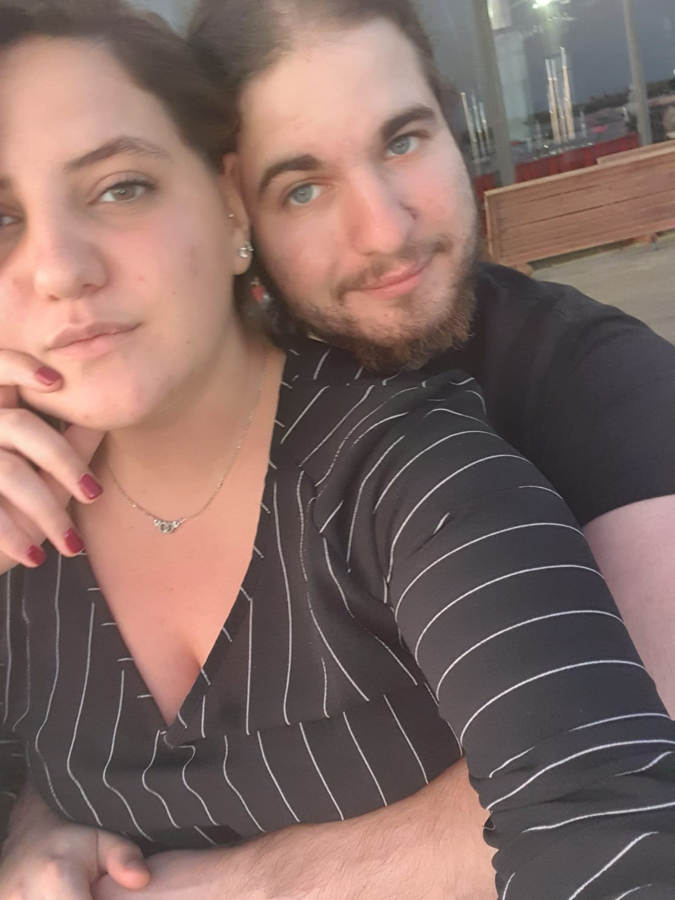
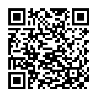

Welcome to my site 😉!
Sooo... for those who guessed it, my name is Hod Twito (and for those who didn't.. come on it's in the web's name. and the logo.)
I'm a third year student to Information Systems and Software Engineering in Ben Gurion University.
Let me tell you a secret? I am 21 years old (🤫🤫🤫). So yeah, a little young comparing to other students, but thats me!
How I am a student at this age? well, I am Atudai- i started my degree right after high-scholl, and when I'll graduate I'll join the IDF (for a lottt of time...).
What I like to do in my free time? sorry I don't know this term, what is "free time"? JK, well, i like to travel, party with my friends, build my own projects and mostly just some Netflix and Chill 😎🍿

Wanna hear another ine of my secrets?
I really love to sleep and relax (like really, and yet I am always tired... If you'll ask all of my friends to tell you one thing about me it will be like "he is allways tired!!")
And somtimes to help me relax and sleep I use this playlist
So enjoy.. And good night 🥱😴😴
After all the secrets I've shared with you, I think I deserve you to like me 👍🏻
Wanna see a magic? scan this code and see 😎✨🧙🏼

Want to contact me and ask me some more questions? Well it's your lucky day!!
Just fill this form and email me!